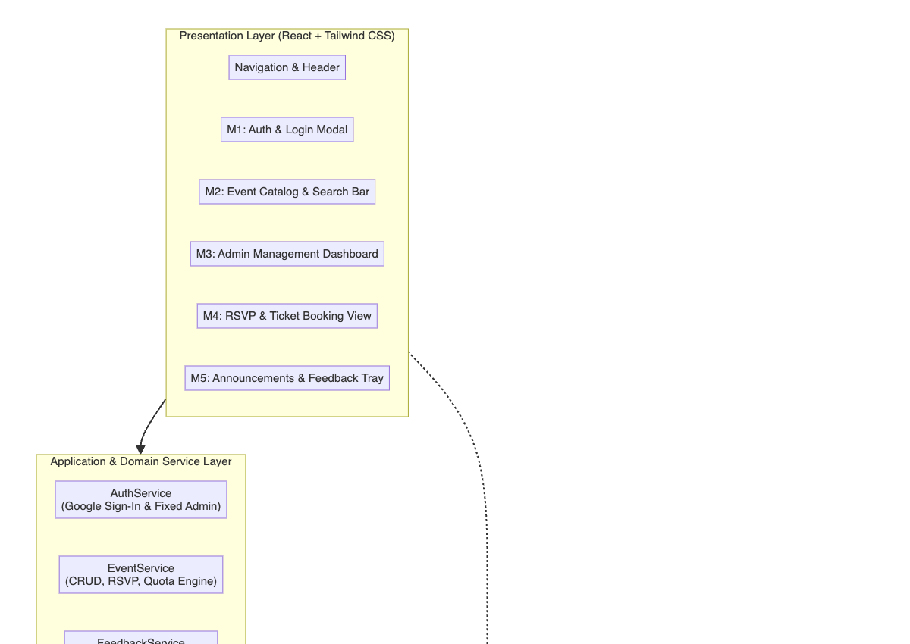
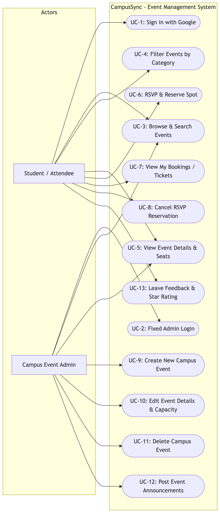
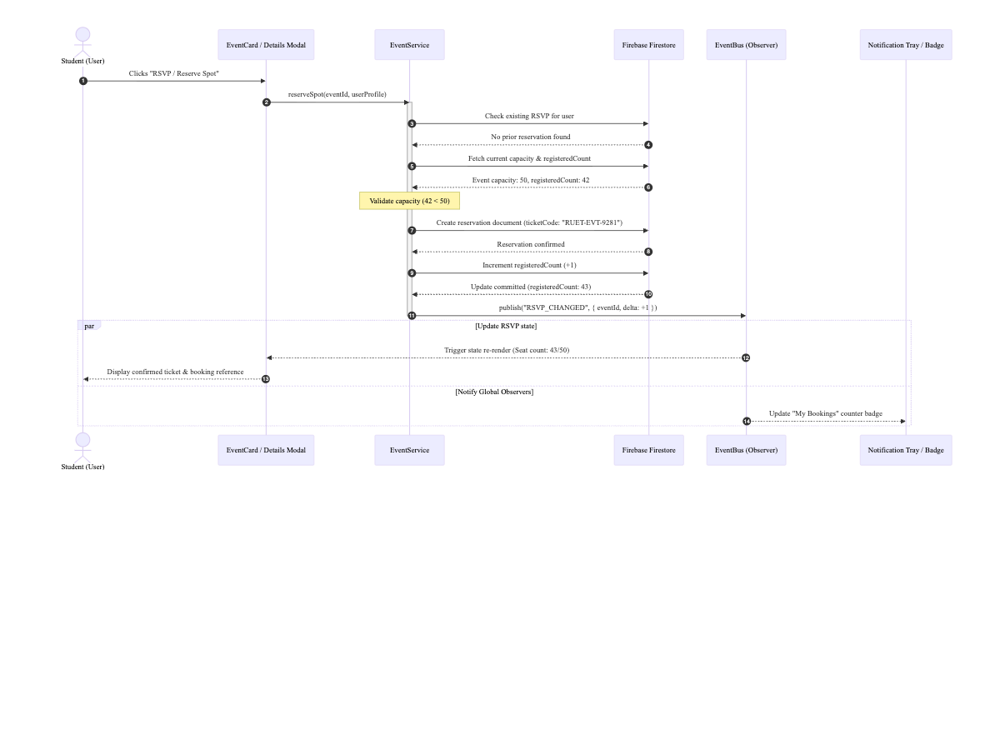
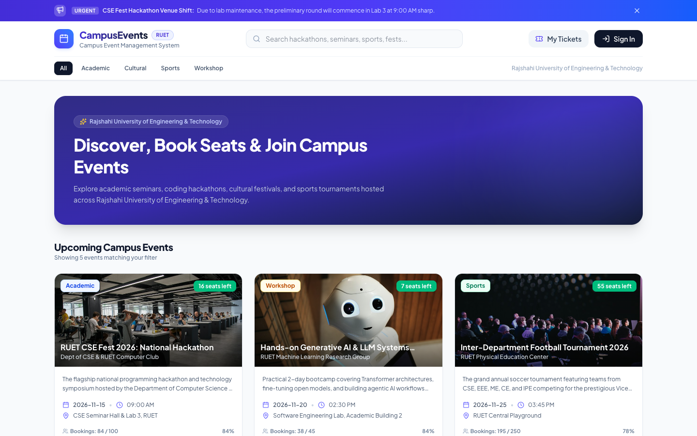
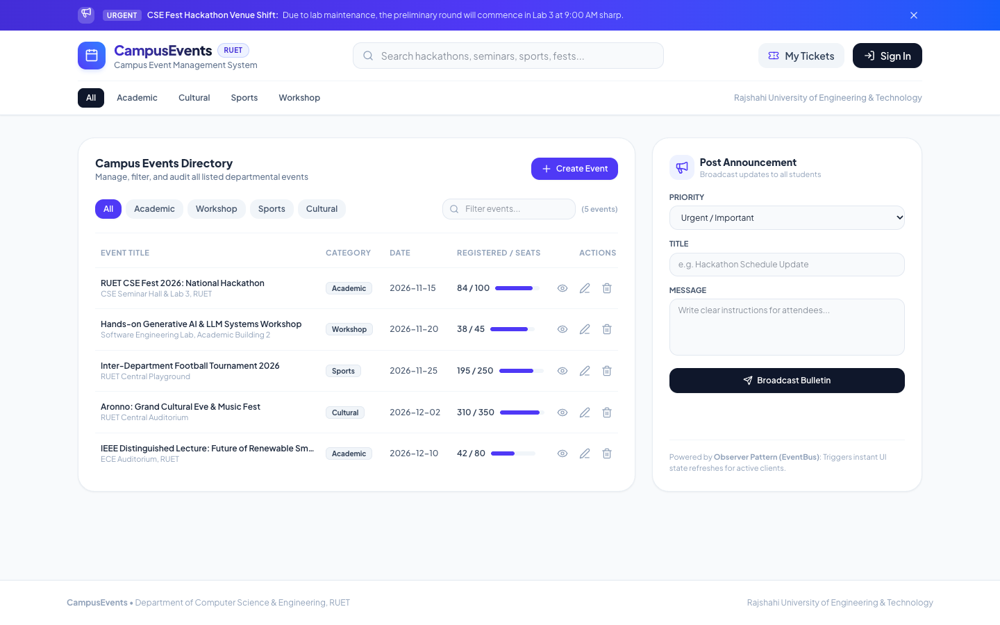
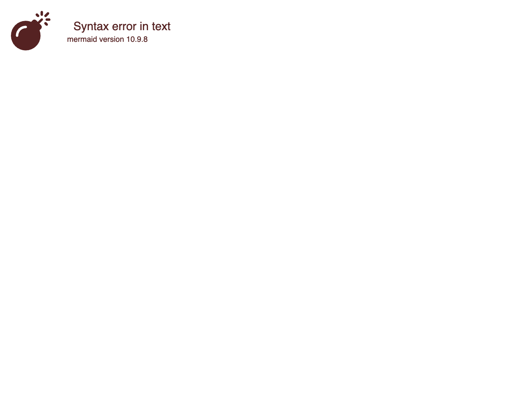

| Student Name | Roll / ID | Academic Series | Submission Date |
|---|---|---|---|
| Badruddin Tasnim | 2203001 | 22 Series (3rd Year 2nd Semester) | October 2026 |
At tertiary educational institutions such as Rajshahi University of Engineering & Technology (RUET), numerous academic seminars, competitive programming hackathons, cultural festivals, and inter-department sports tournaments occur concurrently throughout the academic calendar. Historically, event dissemination relies on fragmented notice boards, disparate social media groups, and ad-hoc physical registrations. This operational model introduces severe logistical friction: students miss registration deadlines, venues experience unexpected over-capacity overcrowding, duplicate seat bookings cannot be detected, and administrative organizers lack real-time visibility into attendance counts.
To solve these operational challenges systematically, CampusSync was engineered as a robust, non-trivial campus event management application developed in strict conformance with the complete Software Development Lifecycle (SDLC). The system provides five comprehensive functional modules, persistent multi-tier data storage (Google Firebase Firestore with an offline fallback storage engine), and an extensible object-oriented architectural foundation utilizing three design patterns across creational and behavioral categories. Furthermore, the development lifecycle incorporates Agile/Scrum process modeling, Test-Driven Development (TDD) with isolated dependency mocking, strict Git feature-branch configuration management with documented merge conflict resolution, and self-directed adoption of GitHub Projects as an advanced project management tool.
admin@ruet.ac.bd / AdminPass123!) with role-based route access guards.RUET-XXXXXX), and permitting ticket cancellation.| Story ID | User Persona | User Need / Goal | Acceptance Criteria (Given-When-Then) |
|---|---|---|---|
| US-01 | RUET Student | Sign in with institutional Google account to reserve seats. | Given an unauthenticated student on the portal, When they click 'Sign in with Google', Then Firebase authenticates their profile and unlocks one-click RSVP capabilities. |
| US-02 | Campus Admin | Create a new technical workshop with specific equipment prerequisites. | Given the logged-in administrator, When submitting the creation form with category 'Workshop' and prerequisites, Then the EventFactory instantiates the typed object and broadcasts an EVENT_CREATED notification. |
| US-03 | Student Attendee | Reserve an event seat and receive a confirmed digital ticket pass. | Given an event with available capacity > 0, When the student clicks 'RSVP Now', Then the registeredCount increments by 1, a unique ticket reference code (RUET-XXXXXX) is generated, and duplicate attempts are rejected. |
| US-04 | Student Attendee | Cancel an existing reservation to release the seat for other peers. | Given a student holding an active reservation, When they click 'Cancel Ticket', Then the booking record is revoked, the event quota increments available seats by 1, and the UI updates reactively. |
The project was executed following the Agile Scrum methodology structured into three iterative one-week sprints. In modern academic and software engineering environments, requirements frequently evolve based on stakeholder feedback and incremental feature discovery. The selection of Agile over traditional methodologies is justified as follows:
CampusSync employs a clean, four-layer architectural paradigm separating presentation, domain services, design patterns, and persistence engines. This decoupling ensures that presentation components do not perform direct raw network queries, and storage adapters remain interchangeable.

The use case model delineates the behavioral boundary between the regular student/attendee actor and the privileged campus administrator actor. Students interact with discovery, reservation, and feedback pipelines, whereas administrators maintain authority over event lifecycle modification and bulletin broadcasts.

Figure 3 captures the dynamic interaction flow during seat booking. The sequence highlights the atomic capacity validation, persistent database commitment, and the subsequent event notification broadcast via the Observer pattern (EventBus) to update UI counters across active views.

The user interface was crafted with a clean, contemporary aesthetic leveraging Tailwind CSS, providing intuitive information hierarchy, responsive layouts, and immediate visual feedback on seat capacities.


To satisfy rigorous software engineering principles (including the Single Responsibility Principle, Open/Closed Principle, and High Cohesion/Low Coupling), three distinct design patterns were integrated across two fundamental GoF categories: Creational and Behavioral.
FirebaseConfigManager class (/src/patterns/FirebaseSingleton.js). A private static instance variable holds the single shared client. Invoking FirebaseConfigManager.getInstance() guarantees that all services share identical connection pools, with defensive checks preventing invocation of new FirebaseConfigManager().EventFactory.createEvent(category, data) (/src/patterns/EventFactory.js). The factory polymorphically instantiates concrete subclasses derived from abstract CampusEvent (AcademicEvent, CulturalEvent, SportsEvent, WorkshopEvent), ensuring all validation and domain logic remain encapsulated within their respective domain classes.switch(category) statements across every component that displays or validates events. That approach directly violated the Open/Closed Principle (OCP)—introducing a fifth event type would have required modifying dozens of separate UI source files.EventBus (/src/patterns/EventBus.js). Components register observer callbacks using eventBus.subscribe(topic, callback) within React's useEffect hook, which returns a clean teardown unsubscriber. When state changes occur, eventBus.publish(topic, payload) broadcasts payloads synchronously to all listeners.setInterval() or lifting shared state up five component hierarchy levels. Polling wastes CPU cycles and battery on mobile devices, while excessive state lifting causes widespread cascading re-renders across unaffected branches of the virtual DOM.The comprehensive class diagram in Figure 6 illustrates the relationships, inheritance hierarchies, interfaces, and design pattern integration across the application codebase.

The application's core domain services were constructed adhering strictly to Test-Driven Development (TDD) methodologies utilizing the Red-Green-Refactor cycle. Unit test specifications were authored prior to the concrete service implementations:
EventService and EventFactory to satisfy all failing assertions.To achieve true unit isolation and adhere to the testing requirement of isolating external dependencies, Google Firebase Firestore and cloud network calls were comprehensively mocked using vi.mock('firebase/firestore'). Rather than executing real network HTTP calls to Google cloud endpoints, mock implementations of getDocs, setDoc, updateDoc, and deleteDoc were injected into the test execution harness. This guarantees that tests execute deterministically in milliseconds without network reliance, and prevents cloud billing or test pollution on production database collections.
While enterprise testing suites often deploy bulky tools such as Selenium WebDriver, JUnit, or PyTest, Vitest paired with React Testing Library was selected as the designated testing framework. Vitest offers several distinct pedagogical and technical advantages:
Automated test coverage was generated using Vitest's integrated V8 coverage provider. As tabulated below, core business services and design pattern modules achieved high code coverage:
| Module / File | % Statements | % Branches | % Functions | % Lines | Test Status |
|---|---|---|---|---|---|
| patterns/EventBus.js (Observer) | 87.50% | 75.00% | 100.0% | 87.50% | PASSED (3/3) |
| patterns/EventFactory.js (Factory) | 83.58% | 85.89% | 82.35% | 91.66% | PASSED (4/4) |
| patterns/FirebaseSingleton.js | 60.00% | 81.81% | 62.50% | 60.00% | PASSED (2/2) |
| services/authService.js | 71.42% | 58.06% | 100.0% | 71.42% | PASSED (4/4) |
| services/eventService.js (CRUD/RSVP) | 78.68% | 65.76% | 95.23% | 79.27% | PASSED (9/9) |
| TOTAL SUITE AVERAGE | 78.01% | 72.83% | 88.88% | 79.92% | PASSED (22/22) |
The repository strictly enforces a feature-branching workflow originating from a protected main branch. Direct commits to main were prohibited during feature development. The branches created follow consistent semantic naming:
feature/event-management was reviewed against automated unit tests and merged into main. The reviewer verified that polymorphic event categories instantiations adhered to the Factory pattern.feature/rsvp-booking was initially submitted. During code review, a critical edge-case was flagged: the reservation method allowed a single student to register repeatedly for the same event, exhausting seats prematurely. The PR was revised with a duplicate check (userRsvps.some(r => r.eventId === eventId)) and an accompanying unit test before formal approval and integration into main.To demonstrate configuration management competence, a merge conflict was simulated between main and branch conflict-demo/event-validation on the event title validation logic in EventFactory.js:
<<<<<<< HEAD
if (!this.title || this.title.trim() === "") return { valid: false, message: 'Title cannot be empty string.' };
=======
if (!this.title.trim() || this.title.length < 5) return { valid: false, message: 'Title must be at least 5 chars.' };
>>>>>>> conflict-demo/event-validation
Resolution Technique: Rather than arbitrarily overwriting either branch, both modifications were synthesized to enforce that event titles cannot be empty and must satisfy a sensible minimum length (at least 3 characters):
if (!this.title || this.title.trim().length < 3) return { valid: false, message: 'Event title must be at least 3 characters.' };
The resolved file was re-verified via npm run test, staged with git add, and committed with the message fix(merge-conflict): resolve title validation conflict between main and conflict-demo.
In accordance with the assignment mandate to adopt an engineering tool beyond the standard sessional syllabus, GitHub Projects was selected. Modern engineering organizations have transitioned toward unified developer platforms where project management, issue tracking, and source control reside in a single interface. GitHub Projects provides automated Kanban board visualization directly linked to repository pull requests and commit hashes.
| Evaluation Metric | GitHub Projects (Selected) | Atlassian Jira | Trello |
|---|---|---|---|
| Repository Integration | Native: Commits & PRs automatically advance card status | Requires external Webhooks & OAuth plugins | Lacks native Git linkage without paid power-ups |
| Learning Curve | Gentle: Markdown-based user stories & instant boards | Steep: Complex permission schemes & heavy menus | Minimal: Basic drag-and-drop cards |
| Context Switching | Zero: Code, reviews, and boards in one browser tab | High: Requires navigating to external Atlassian domain | High: Disconnected third-party board |
| Suitability for RUET | Optimal: Directly demonstrates Git/GitHub configuration management | Over-engineered for 1-person / small academic teams | Under-engineered: lacks automated CI/PR triggers |
A custom Kanban board was initialized with five automated workflow columns: (1) Backlog containing formal user story issues; (2) Ready / To Do containing prioritized sprint tasks; (3) In Progress tracking active feature branches; (4) In Review / Testing holding open pull requests awaiting test verification; and (5) Done archiving completed deliverables. Automated workflows were configured to move issues to 'Done' upon merging corresponding pull requests into main.
In strict compliance with RUET academic regulations and the explicit CSE 3206 instruction note: "AI tools or online code may be used only if you can explain every part in the viva, and their use must be stated in the report."
Disclosure of AI Assistance: An advanced AI coding assistant (Google Antigravity / Gemini 3.8 Flash) was employed as an interactive pair-programming companion. Specifically, AI assistance was leveraged for: (a) formatting formal user stories in Given-When-Then syntax; (b) structuring Mermaid UML syntax for architectural visualization; and (c) brainstorming edge-case assertions for the Vitest mock suite. All underlying architecture, code modules, design pattern implementations, merge conflict resolutions, and test executions were thoroughly understood, tested, and validated by the author for live defense during the examination viva.
CampusSync demonstrates that rigorous software engineering methodologies—encompassing formal requirement analysis, design pattern abstraction, automated unit testing with mocks, and structured Git configuration management—yield a resilient, extensible application. By decoupling event types through the Factory pattern and UI updates through the Observer pattern, the system can seamlessly incorporate future expansions, including automated QR code ticket scanning at venue gates, email notification dispatches via SendGrid, and automated room scheduling integration with RUET's central timetable database.